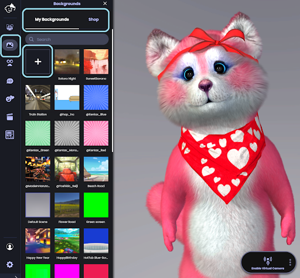
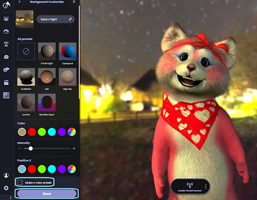

背景を変更するにはどうすればよいですか？
次の手順でAnimazeの背景を変更します:
1.左メニューの「背景」アイコンをクリックしますメニューには、背景、新しい背景を購入できるショップボタン、アバターをインポートするオプション「+」が表示されます。

*技術的不一致があった場合に備え、Animazeエディターを使用してカスタムアバター/背景をインポートすることを推奨しています。
2.読み込みたい背景を選択します。一度読み込むと、簡単な方法で選択したアバターを保存することができます。さらに、「新しいプリセットを作成」オプションにチェックを入れると、Animazeアプリをあなたの好きな背景で開くことができます。
